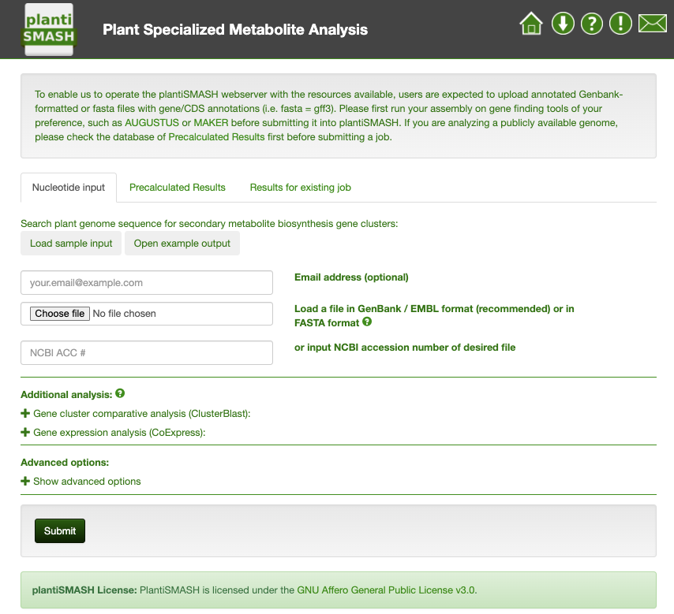
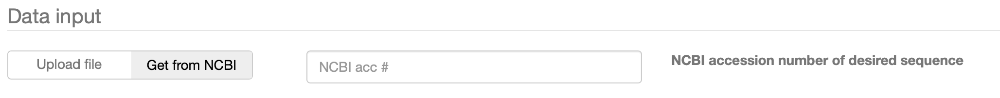
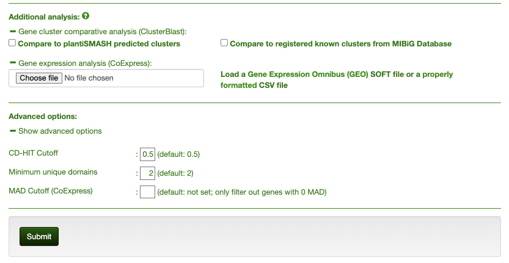
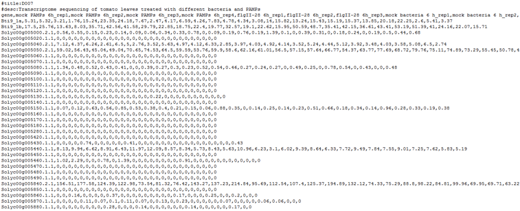

Setting up your plantiSMASH job#
This page describes all relevant steps to get to interpretable plantiSMASH output using the web server. It covers everything from the correct input data to what all settings and parameters mean. Here is the latest stable bacterial version of plantiSMASH available of which a screenshot is provided below:

PlantiSMASH database of precalculated results#
Before submitting your plantiSMASH job, check if the results for your genome are already available in the precalculated results on the plantiSMASH database.
Registering your plantiSMASH job#
In case you would like to get an email alert upon completion of your job you can optionally provide your email address in the "Notification settings" panel. You will then receive an email with a link to your completed job once it finished okay or if any error would have unfortunately occurred. Please note that if you did not provide an email address, you should bookmark the link to the job submission page, as otherwise you will not be able to access the results anymore.

plantiSMASH input data#
The ideal input for plantiSMASH is an annotated nucleotide file in Genbank format or EMBL format.
You can either upload a GenBank/EMBL file manually, or enter the GenBank/RefSeq accession number of your sequence for plantiSMASH to upload it.
Alternatively, you can provide a FASTA file containing one or more sequences.
If possible, you should also supply a separate GFF3-formatted file containing the annotation information for all said sequences.
If no annotation is available, we recommend running your sequence through an annotation pipeline like MAKER (preferably with transcriptomic evidence) to obtain GBK/EMBL files with high-quality annotations.
Otherwise, plantiSMASH will generate a preliminary annotation using GlimmerHMM, and use that to run the rest of the analysis.
Input files should be properly formatted.
If you are creating your GBK/EMBL/FASTA file manually, be sure to do so in a plain text editor like Notepad or Emacs, and saving your files as "All files (.)", ending with the correct extension (for example ".fasta", ".gbk", or ".embl").
There are several optional analyses that may or may not be run on your sequence.
Highly recommended is the ClusterBlast Comparative Analysis, which runs Diamond using each amino acid sequence from a detected gene cluster as a query on a large database of predicted protein sequences from secondary metabolite biosynthetic gene clusters, and pools the results to identify the gene clusters that are most homologous to the gene cluster that was detected in your query nucleotide sequence.

In any case, it is very important that input files are properly formatted. If you are creating your GBK/EMBL/FASTA file manually, be sure to do so in a plain text editor like Notepad or Emacs, and saving your files as "All files (.)", ending with the correct extension (for example ".fasta", ".gbk", or ".embl".)
Additional analyses and Advanced options#
Before pressing the submission button, you will have to indicate which plantiSMASH features you like to run.
As can be seen in the screenshot above, all features can be easily toggled off or on in one click on the top of the "Additional analysis" panel. The following three features are off by default and are considered to be useful for advanced users or in case interesting biosynthetic gene clusters were found that warrant further detailed analysis.

KnownClusterBlast analysis#
The identified clusters are searched against the MIBiG repository. MIBiG is a hand curated data collection of biosynthetic gene clusters, which have been experimentally characterized.
ClusterBlast analysis#
the identified clusters are searched against a comprehensive gene cluster database and similar clusters are identified. The algorithm used here is inspired by MultiGeneBlast. It runs BlastP using each amino acid sequence from a detected gene cluster as a query on a large database of predicted protein sequences from secondary metabolite biosynthetic gene clusters, and pools the results to identify the gene clusters that are most homologous to the gene cluster that was detected in your query nucleotide sequence. Enabling this option will increase the runtime of a submission.
Gene expression analysis (CoExpress)#
Also available is the analysis of gene coexpression from transcriptomics data.
You can supply one or more additional file(s) either in GEO compliant *.soft format or in a simple CSV format; plantiSMASH will then generate several powerful visualizations to help you see how genes interacts in terms of expression in a set conditions, both within and between clusters.
This is an example of CSV format accepted by plantiSMASH-CoExpress:

The first two lines containing #title and #desc should be self-explanatory. These are then followed by the comma separated rows. The first row would be the header, containing each sample / condition name. The next rows are for the actual expression data, with the first column containing the locus tag directly matching to the supplied genome annotation, and the next columns containing expression values of the gene for each sample /condition.
The number of columns in each row should be identical. In case of no expression data for a specific gene in a specific sample, simply put 0 or an empty character in the space between the commas. Also, one important thing to note is that the expression values should be comparable across all samples, i.e. they are measured and normalized in the same way (log values, signal count data, etc).
Subgroup identification#
plantiSMASH predicts substrate specificities of enzyme subfamilies for cellulose synthases, UDP-glucuronosyltransferases, short-chain dehydrogenases, and oxidosqualene cyclases, using pplacer and hmmer. The phylogenetic placement tool pplacer is used to place the target protein sequence on a precomputed reference tree. If the other members under the target parent node belong to the same subgroup, the target is considered to belong to the subgroup. In addition, GraPhlAn(Graphical Phylogenetic Analysis) is used to generate a tree image of the placement result. The HMM of each subgroup used by hmmer scan is made based on the full-length protein sequences of members in the subgroup. HMMs find matches based on the conserved positions of subgroup members, so they are also an efficient and simple method to identify subgroups of targets, especially those sequences with big differences. When the subgroup represented by the HMM with the highest match bitscore is consistent with the results from pplacer, it will be reported on the overview page that the target may have the same substrate type as those members of the subgroup.
TFBS Detection#
These results are displayed within the Pfam domains section of the plantiSMASH HTML results, by emphasising the borders of the relevant domains.
See Understanding the output for instructions on how to download the results.